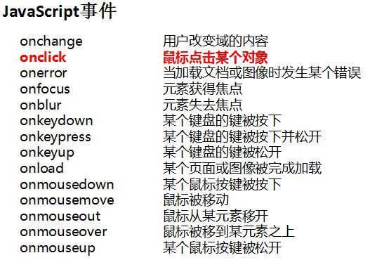

javascript和java的关系
JavaScript 是动态类型语言，而 Java 是静态类型语言；
JavaScript 是弱类型的，Java 属于强类型；
标识符的命名规范
1.区分大小写
2.第一个字符必须是一个字母、下划线（_）或一个美元符号（$）;其他字符可以是字母、下划线、美元符号或数字
3.不能含有空格
4.不能以关键字或保留字命名
JS代码书写规范
1.缩进的最小单位是4个空格
2.所有的变量应该在使用前声明
3.命名应该由26个大小写字母(A .. Z, a .. z)，10个数字(0 .. 9)和_(下划线)组成。不要在名字里使用$(美元符号)或\(反斜线符号)。
JS数据类型
undefined：变量被声明后，但未被赋值
string：用单引号或双引号来声明的字符串
boolean：true或false
number：整数或浮点数
复杂数据类型：object：数组和nul，js对象l
| 类型 |
运算符 |
| 赋值运算符 |
= |
| 复合赋值运算符 |
+= -= *= /= %= |
| 算术运算符 |
+ - * / % ++ -- |
| 关系运算符 |
> < >= <= == != |
| 三元条件运算符 |
?: |
| 逻辑运算符 |
&& || ! |
逻辑控制语句
- if条件语句
- if(条件){
//JavaScript代码;}
else{
//JavaScript代码;
}
- switch多分支语句
- switch (表达式){
case 常量1 : JavaScript语句1;break;
case 常量2 : JavaScript语句2;break;
...
default : JavaScript语句3;}
- for、while循环语句
- for(初始化; 条件; 增量){
JavaScript代码;}
while(条件){
JavaScript代码;
}
类型转换函数
parseInt ("字符串")：将字符串转换为整型数字
parseFloat("字符串")：将字符串转换为浮点型数字
isNaN()：用于检查其参数是否是非数字

JavaScript函数声明
function 函数名() {javaScript代码}
调用函数：onclick="函数名() ”
直接运行函数：
1、window.onload=函数名();
2、< body onload= "函数名() " >
var fnName = function() {{javaScript代码};
调用函数：fnName();
数组常用方法
| push(元素) |
将一个或多个新元素添加到数组结尾，并返回数组新长度。 |
| unshift(元素) |
将一个或多个新元素添加到数组开始，数组中的元素自动后移，返回数组新长度 |
| pop(); |
移除最后一个元素并返回该元素值 |
| shift(); |
移除最前一个元素并返回该元素值，数组中元素自动前移 |
|
splice(开始位置, 删除长度,插入的元素);
|
|
concat()连接两个数组,返回一个新数组(不会改变原数组)
|
|
join(分隔符)用分隔符，组合数组元素，生成字符串。省略分隔符话则用默认用逗号为分隔符。
|
|
reverse(); 反转元素（最前的排到最后、最后的排到最前），返回数组地址
|
window对象的方法
| close |
关闭浏览器窗口 |
| open |
打开一个新的浏览器窗口，加载给定 URL 所指定的文档 |
| setTimeout |
在指定的毫秒数后调用函数或计算表达式 |
| setInterval |
按照指定的周期（以毫秒计）来调用函数或表达式 |
js有哪些弹窗
window对象的常用属性
| screen |
有关客户端的屏幕和显示性能的信息 |
| history |
有关客户访问过的URL的信息 |
| location |
有关当前 URL 的信息 |
BOM和DOM的关系
DOM:文档对象模型，通过DOM可以动态改变文档内容
BOM包含DOM
document对象的常用属性
| referrer |
返回载入当前文档的文档的URL |
| URL |
返回当前文档的URL |
document对象的常用方法
| getElementById() |
返回对拥有指定id的第一个对象的引用 |
| getElementsByName() |
返回带有指定名称的对象的集合 |
| getElementsByTagName() |
返回带有指定标签名的对象的集合 |
| write() |
向文档写文本、HTML表达式或JavaScript代码 |
| innerHTML |
设置或获取位于对象起始和结束标签内的 HTML |
| outerHTML |
设置或获取对象及其内容的 HTML 形式 |
| innerText |
设置或获取位于对象起始和结束标签内的文本 |
| outerText |
设置(包括标签)或获取(不包括标签)对象的文本 |
| value |
可以获取input文本框中的内容 |
visibility属性
| visible |
表示元素是可见的 |
| hidden |
表示元素是不可见的 |
| object.style.visibility="值" |
display属性
| none |
表示此元素不会被显示 |
| block |
表示此元素将显示为块级元素，此元素前后会带有换行符 |
| object.style.display="值" |
| 查看/修改属性节点 |
| getAttribute("属性名") |
| setAttribute("属性名","属性值") |
| 根据层次关系查找节点的属性 |
| parentNode |
| firstChild |
| lastChild |
| nextSibling |
| previousSibling |
| 创建和增加节点 的方法 |
| createElement( ) |
创建节点 |
| appendChild( ) |
末尾追加方式插入节点 |
| insertBefore( ) |
在指定节点前插入新节点 |
| cloneNode( ) |
克隆节点 |
| 删除和替换节点的方法 |
| removeChild( ) ： |
删除节点 |
| replaceChild( ) ： |
替换节点 |
| table表格对象 |
| 类别 |
名称 |
描述 |
| 属性 |
rows[] |
返回包含表格中所有行的一个数组 |
| 方法 |
insertRow() |
在表格中插入一个新行 |
| deleteRow() |
从表格中删除一行 |
| tableRow表格行对象 |
| 类别 |
名称 |
描述 |
| 属性 |
cells[] |
返回包含行中所有单元格的一个数组 |
| rowIndex |
返回该行在表中的位置 |
| className |
设置或返回元素的class属性 |
| 方法 |
insertCell() |
在一行中的指定位置插入一个空的 |
| deleteCell() |
删除行中指定的单元格 |
| tableCell单元格对象 |
| 类别 |
名称 |
描述 |
| 属性 |
cellIndex |
返回单元格在某行单元格集合中的位置 |
| innerHTML |
设置或返回单元格的开始标签和结束标签之间的HTML |
| align |
设置或返回单元格内部数据的水平排列方式 |
| className |
设置或返回元素的class属性 |
获取样式属性值
1、获取行内样式的方法
document.getElementById(elementId).样式属性值
2、获取内部(内嵌)和外部样式的方法
currentStyle
getComputedStyle()
获取滚动条滚动的距离
| scrollTop |
设置或获取位于对象最顶端和窗口中可见内容的最顶端之间的距离 |
| scrollLeft |
设置或获取位于对象左边界和窗口中目前可见内容的最左端之间的距离 |
| clientWidth |
浏览器中可见内容的宽度，不包括滚动条等边线，会随窗口的显示大小改变 |
| clientHeight |
浏览器中可以看到内容的区域的高度 |
| String对象 |
| toLowerCase() |
把字符串转化为小写 |
| toUpperCase() |
把字符串转化为大写 |
| charAt(index) |
返回在指定位置的字符 |
| indexOf(字符串，index) |
查找某个指定的字符串值在字符串中首次出现的位置 |
| substring(index1,index2) |
返回位于指定索引index1和index2之间的字符串，并且包括索引index1对应的字符，不包括索引index2对应的字符 |
| String对象的方法 |
| match |
找到一个或多个正则表达式的匹配 |
| search |
检索与正则表达式相匹配的值 |
| replace |
替换与正则表达式匹配的字符串 |
| split |
把字符串分割为字符串数组 |
| 文本框对象 |
| 事件 |
onblur |
失去焦点，当光标离开某个文本框时触发 |
| onfocus |
获得焦点，当光标进入某个文本框时触发 |
| onkeypress |
某个键盘按键被按下并松开 |
| 方法 |
blur() |
从文本域中移开焦点 |
| focus() |
在文本域中设置焦点，即获得鼠标光标 |
| select() |
选取文本域中的内容 |
| 属性 |
id |
设置或返回文本域的id |
| value |
设置或返回文本域的value属性的值 |
正则表达式符号
| 修饰符 |
| i |
执行对大小写不敏感的匹配。 |
| g |
执行全局匹配（查找所有匹配而非在找到第一个匹配后停止）。 |
| m |
执行多行匹配。 |
| 方括号 |
| [abc] |
查找方括号之间的任何字符。 |
| [^abc] |
查找任何不在方括号之间的字符。 |
| [0-9] |
查找任何从 0 至 9 的数字。 |
| [a-z] |
查找任何从小写 a 到小写 z 的字符。 |
| [A-Z] |
查找任何从大写 A 到大写 Z 的字符。 |
| [A-z] |
查找任何从大写 A 到小写 z 的字符。 |
| [adgk] |
查找给定集合内的任何字符。 |
| [^adgk] |
查找给定集合外的任何字符 |
| (red|blue|green) |
查找任何指定的选项。 |
| 元字符 |
| /…/ |
代表一个模式的开始和结束 |
| ^ |
匹配字符串的开始 |
| $ |
匹配字符串的结束 |
| \s |
任何空白字符 |
| \S |
任何非空白字符 |
| \d |
匹配一个数字字符，等价于[0-9] |
| \D |
除了数字之外的任何字符，等价于[^0-9] |
| \w |
匹配一个数字、下划线或字母字符，等价于[A-Za-z0-9_] |
| \W |
任何非单字字符，等价于[^a-zA-z0-9_] |
| . |
除了换行符之外的任意字符 |
计时器有哪些相关函数
setTimeout(函数名称或者匿名函数,时间)
setInterval(函数名称或者匿名函数,时间)
innerHTML与outerHTML及innerText的区别
innerHTM:设置或获取位于对象起始和结束标签内的 HTML
outerHTML:设置或获取对象及其内容的 HTML 形式
innerText:设置或获取位于对象起始和结束标签内的文本
var random = Math.floor(Math.random()*110 + 444);
我可以生成一个444~553的随机数
var a = [1,5,3,7] 让数组a转换成[7,3,5,1]
var b = a.reverse();
设置当前时间为2000年12月12日下午10点10分10秒
var time = new Date("2000/12/12,22:10:10");
var a = [1,5,3,7];
a.sort();
alert(a)输出1,3,5,7
把a转换成字符串
Var b = a.join(“,”)
var arr = [1,[2,3,4],4,6];这是一个二维数组
arr.length的值是4
如何访问到4
第一个4：arr[1][2];第二个4：arr[2];
获取鼠标的坐标
Var event = e || window.event;
Var left = event.clientX;
Var top = event.clientY;
.jpg)
.jpg)
.jpg)
.jpg)
.jpg)